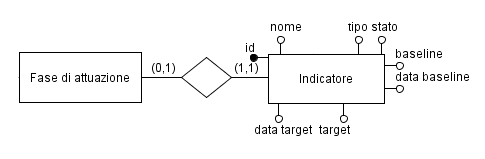

La fase di attuazione di una misura non è altro che un descrittore interno alla misura che può essere collegato ad un indicatore di monitoraggio. Quando si effettua quindi una misurazione di un indicatore, si sta misurando la realizzazione della fase di attuazione collegata alla misura.
Una fase di attuazione ha solo:
un id
un nome
un ordinale
una data di inserimento (da sistema)
Non è possibile collegare un indicatore di monitoraggio direttamente alla misura: ogni indicatore va collegato alla fase di attuazione della misura, secondo la seguente relazione:

Come si legge dal diagramma:
Una fase di attuazione può non avere indicatori collegati, e deve avere al più un indicatore.
Un indicatore deve avere una fase di attuazione collegata e può essere collegato al più a tale fase.
Il criterio perché il monitoraggio sia soddisfatto (cioè la misura risulti applicata) dipende dall’algoritmo che si vuole implementare.
Criterio “stretto”:
Criterio “lasco”:
Il criterio “lasco” è più semplice da gestire e implementare e potrebbe anche essere più attinente semanticamente alla realtà che si vuole rappresentare, perché spesso tra i vari indicatori ce n’è uno soltanto che fa veramente fede ai fini del monitoraggio. Si pensi, ad esempio, al monitoraggio della misura che consiste nell’applicazione di un regolamento; una prima fase sarà di analisi; una seconda di stesura del regolamento ma solo la fase di attuazione del regolamento, che ha come target “On”, è quella che ha senso controllare per verificare che la misura è stata effettivamente applicata.
Come si controlla se il target è stato raggiunto? Lo si fa tramite una misurazione.
In questo senso occorre fare attenzione alla distinzione tra misura e misurazione.